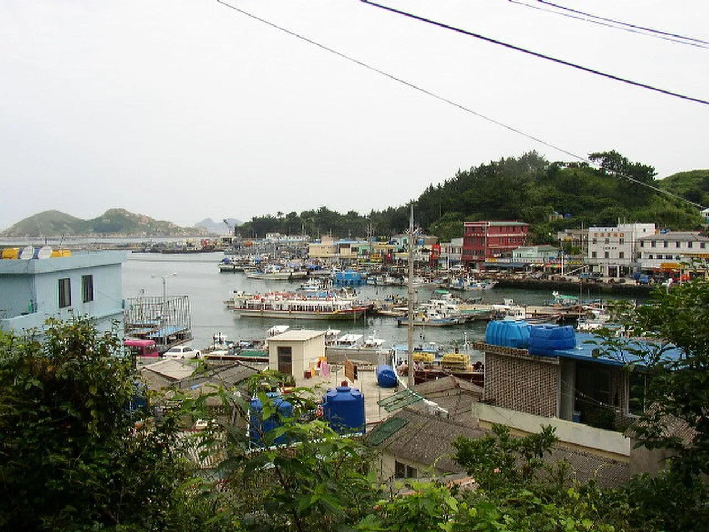
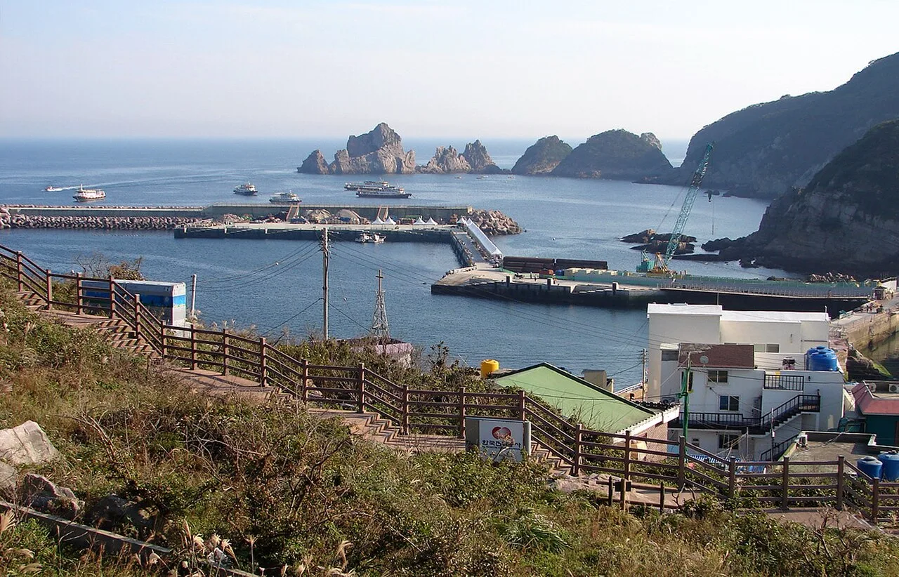
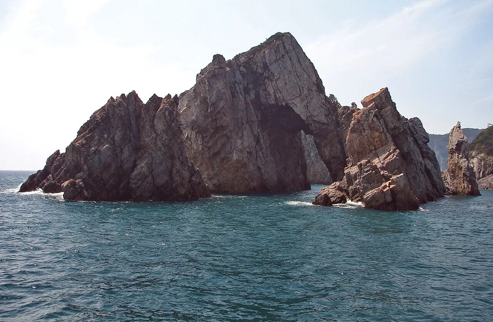
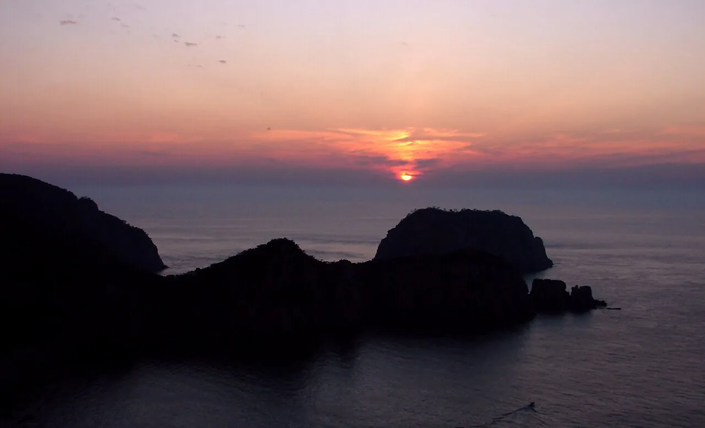
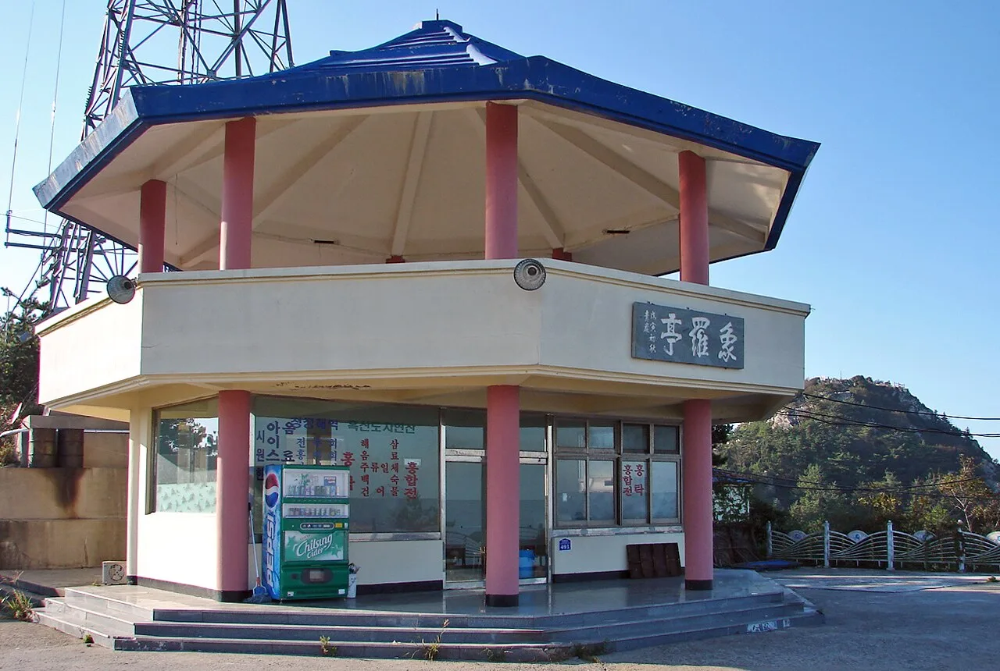
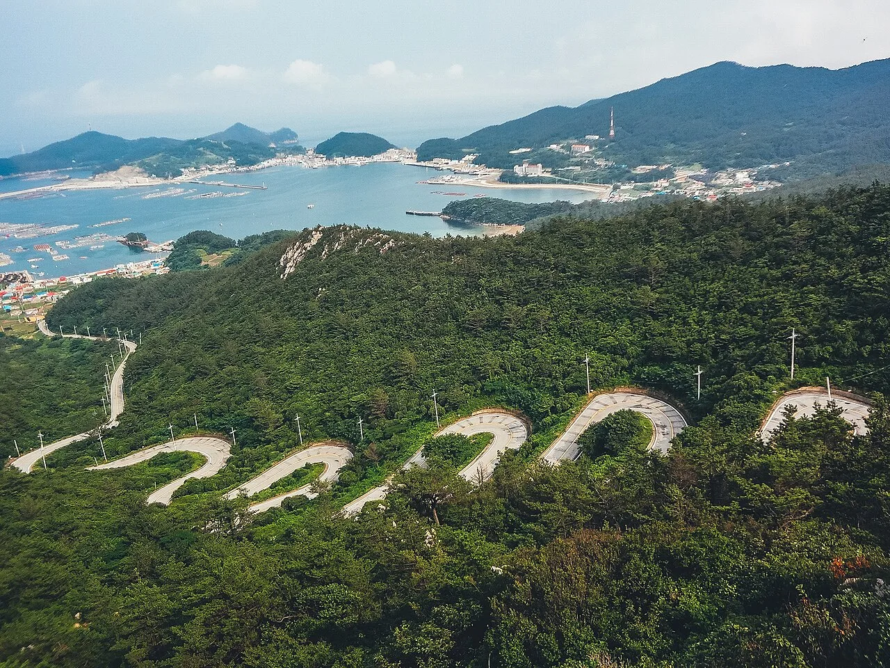
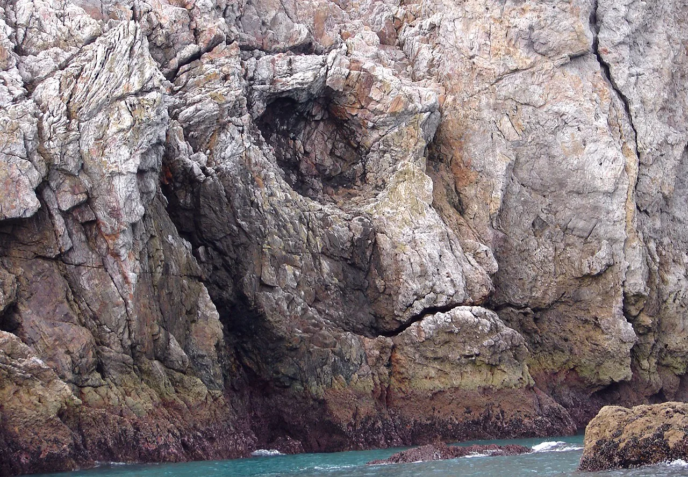
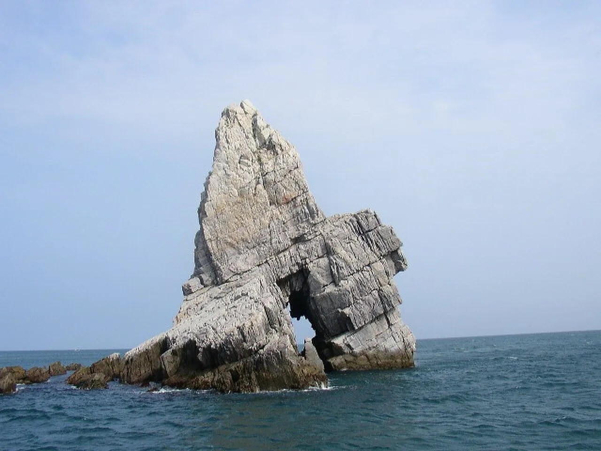

▲ 홍도 33경으로 불리는 해안 기암절벽. 유람선을 타야 제대로 둘러볼 수 있다
전남 신안군 흑산면, 목포에서 서남쪽으로 90~115km 떨어진 흑산도와 홍도는 육로로 갈 수 없는 섬이다. 목포연안여객선터미널에서 쾌속선을 타야만 닿는다. 그래서인지 두 섬은 오래도록 '멀어서 못 가는 섬'으로 여겨졌지만, 실은 그 거리감이 지금의 풍경을 지켜낸 이유이기도 하다. 흑산도에는 조선 후기 실학자 정약전이 16년간 유배 생활을 하며 물고기 226종을 기록한 자산어보(玆山魚譜)의 현장이 그대로 남아 있고, 홍도는 유람선을 타야만 전체를 볼 수 있는 기암절벽 33경을 품고 있다. 이 기사는 목포항에서 출발하는 배편부터 홍도 유람선, 흑산도 명소, 숙박·일정까지 방문 순서대로 정리했다.
1. 목포항에서 쾌속선으로 — 배편 시간표와 요금(2026년 기준)

▲ 흑산도의 관문인 예리 흑산항. 목포와 홍도를 잇는 여객선이 이곳에서 오간다 ⓒ Wikimedia Commons
흑산도·홍도는 서울·부산 등 육지에서 출발할 경우 먼저 KTX·버스로 목포까지 이동한 뒤, 목포연안여객선터미널에서 쾌속선으로 갈아타야 한다. 목포에서 흑산도까지는 약 2시간, 홍도까지는 약 2시간 30분이 걸린다. 동양훼리·씨스타 등 선사가 매일 여러 항차를 운항하며, 통상 오전 1항차(07:50 전후 출발)와 오후 1항차(12:30 전후 출발)로 나뉜다. 계절·기상에 따라 운항 시간과 항차 수가 자주 바뀌므로, 방문 직전 선사 홈페이지나 목포연안여객선터미널에서 최신 시간표를 확인하는 편이 안전하다.
| 구간 | 주중 | 주말·성수기 | 소요시간 |
|---|---|---|---|
| 목포 ↔ 흑산도 | 44,000원 | 47,600원 | 약 2시간 |
| 목포 ↔ 홍도 | 54,000원 | 58,500원 | 약 2시간 30분 |
| 흑산도 ↔ 홍도(연결편) | 14,300원 | 15,400원 | 약 40분 |
※ 청소년·소인 요금은 별도 할인 적용되며, 도서민이나 '바다로' 할인 대상은 추가로 요금이 낮아진다. 기상 악화 시 결항이 잦은 항로이므로 왕복 일정에 여유를 두는 것이 좋다.
흑산페리에서 최신 운항요금 확인 가능2. 홍도 33경 — 유람선을 타야 보이는 절경

▲ 홍도항 전경. 목포행 여객선과 33경을 도는 유람선이 이곳에서 출항한다 ⓒ Wikimedia Commons
홍도는 섬 전체가 붉은빛이 도는 규암질 바위로 이루어져 '홍도(紅島)'라는 이름이 붙었다. 해안을 따라 깎아지른 절벽과 기암괴석이 이어지는데, 이 중 신안군이 꼽은 절경을 통틀어 홍도 33경이라 부른다. 남문바위는 소형 선박이 지나다닐 수 있을 만큼 큰 구멍이 뚫린 석문으로 홍도의 관문 역할을 하고, 실금리굴·석화굴·탑섬·만물상·부부탑·독립문바위·거북바위·공작새바위 등이 대표 명소로 꼽힌다. 이 절경들은 대부분 육로가 아닌 바다 쪽에서만 보이기 때문에, 유람선을 타지 않으면 홍도의 절반도 보지 못한 셈이 된다.

▲ '코끼리바위'로 불리는 홍도 해안의 아치형 기암. 파도와 바람이 오랜 세월 깎아낸 지형이다 ⓒ Wikimedia Commons

▲ 홍도 해안에 내려앉은 노을. 유람선 운항이 끝난 뒤 섬에서 바라보는 일몰도 홍도의 명물이다 ⓒ Wikimedia Commons
홍도 유람선은 연중무휴로 운항하며 1항차(오전)와 2항차(오후)로 나뉘어 각 2시간 안팎이 걸린다. 남문바위·실금리굴 등 주요 절경을 해상에서 순환하며 둘러보는 코스로, 선사·시기에 따라 요금과 운항 시간이 달라질 수 있어 홍도관리사무소나 현지 선착장에서 사전 확인이 필요하다. 기상 상황에 따라 결항하는 경우도 잦으므로 홍도에서 1박 이상 머무는 일정이라면 유람선 탑승 확률이 높아진다.
신안군 문화관광에서 홍도 33경 정보 확인 가능3. 흑산도 — 상라산성·상라산전망대와 사리마을 유배지

▲ 흑산도 12굽이길 정상의 상라산전망대. '흑산도 아가씨' 노래비가 서 있는 일출·일몰 명소다 ⓒ Wikimedia Commons
흑산도 일주도로 중 가장 구불구불한 고갯길을 오르면 상라산전망대가 나온다. 가수 이미자의 노래 '흑산도 아가씨' 노래비가 서 있는 자리로, 흑산도 앞바다는 물론 북동쪽으로 다물도와 대둔도까지 한눈에 들어오는 일출·일몰 명소다. 전망대 인근에서는 옛 산성터인 상라산성과 무심사선원 터, 사신들이 머물렀던 숙소 터가 발굴돼 흑산도가 오래전부터 뱃길의 요충지였음을 보여준다. 전망대에서 10분 정도 더 오르면 상라산 정상의 봉화대에 닿는다.

▲ 상라산전망대로 오르는 흑산도 12굽이길. 급경사 고갯길을 굽이굽이 오르면 상라산성터와 전망대가 나온다 ⓒ Wikimedia Commons

▲ 흑산도 해안 곳곳에서 만날 수 있는 해식 기암절벽. 사리마을로 가는 해안 길에서도 비슷한 풍경이 이어진다 ⓒ Wikimedia Commons
흑산도 서쪽 사리마을은 조선 후기 실학자 정약전(丁若銓)이 유배 생활을 했던 곳이다. 1801년 신유박해로 흑산도에 유배된 정약전은 끝내 사면받지 못한 채 16년 만인 1816년 이 섬에서 생을 마쳤다. 그는 유배지 이름인 '흑산(黑山)'이라는 말조차 꺼려 동생 정약용에게 보내는 편지에서는 늘 '자산(玆山)'으로 바꿔 불렀다고 전해진다. 유배 초기 우이도·대흑산도를 거쳐 1807년 사리마을로 거처를 옮긴 그는 이곳에 서당 복성재(復性齋)를 짓고 제자를 가르치는 한편, 흑산도 연안에서 잡히는 어패류 226종의 이름과 생김새·습성을 기록해 1814년 우리나라 최초의 어류도감으로 꼽히는 자산어보를 완성했다. 지금 사리마을에는 유배문화공원이 조성돼 있고, 복원된 복성재 건물도 남아 있다.
목포대 가고싶은 섬에서 사리마을 유배지 정보 확인 가능4. 대둔도 칠형제바위 — 흑산 8경의 전설

▲ 흑산도 북동쪽에 자리한 대둔도 인근 해안. 칠형제바위 전설이 전해지는 곳이다 ⓒ Wikimedia Commons
흑산도 북동쪽, 목포에서 약 93km 떨어진 대둔도는 오리·수리 두 마을로 이뤄진 섬이다. 이 일대는 울릉도 송곳바위, 설악산 공룡능선과 함께 한국의 3대 절경으로 꼽히기도 하는 칠형제바위로 유명하다. 전설에 따르면 극심한 태풍으로 어머니가 며칠째 물질을 하지 못하자, 일곱 아들이 파도를 막으려 팔을 벌린 채 바다로 뛰어들었고 그대로 일곱 개의 작은 바위섬이 되었다고 한다. 칠형제바위는 육로로 접근하기 어려워 흑산도 유람선이나 낚시 투어 등을 통해 해상에서 감상하는 경우가 많다.
5. 숙박·일정 팁 — 1박 2일이면 충분할까
흑산도·홍도는 목포에서 왕복만 최소 4~5시간이 걸리는 데다 유람선·버스 관광까지 더하면 하루 일정으로는 빠듯하다. 가장 무난한 코스는 1박 2일로, 첫날 홍도에 입도해 오후 유람선으로 33경을 둘러본 뒤 홍도에서 숙박하고, 다음 날 흑산도로 이동해 상라산전망대·사리마을 등을 버스로 둘러보고 목포로 돌아오는 일정이다. 시간 여유가 있다면 2박 3일로 늘려 두 섬 모두에서 하루씩 묵으며 트레킹까지 곁들이는 편이 알차다. 숙소는 홍도·흑산도 모두 민박·펜션이 중심이며, 흑산도에는 흑산도문화관광호텔 등 호텔급 숙소도 있다. 성수기(7~8월, 가을 단풍철)에는 배편과 숙소 모두 예약이 빨리 마감되는 편이라 서두르는 것이 좋다.
| 일차 | 일정 |
|---|---|
| 1일차 | 목포항 출발 → 홍도 입도 → 홍도 33경 유람선 관광 → 홍도 숙박 |
| 2일차 | 홍도 → 흑산도 이동 → 상라산전망대·사리마을(자산어보 유배지) 버스 관광 → 목포항 귀항 |
6. 함께 보면 좋은 신안 다도해
흑산도·홍도가 속한 신안군은 1,000여 개의 섬으로 이뤄진 다도해해상국립공원 권역이다. 목포항에서 출발하는 김에 임자도·자은도·증도 등 퍼플섬·염전으로 유명한 인근 섬을 함께 묶어 일정을 짜는 여행객도 많다. 다만 흑산도·홍도는 뱃길로만 3시간 안팎 떨어져 있어 같은 여정에 무리하게 욱여넣기보다는, 별도 일정으로 나눠 방문하는 편이 기상 변수에도 여유롭게 대응할 수 있다.
✅ 흑산도·홍도, 가기 전 체크리스트
· 목포연안여객선터미널에서 쾌속선으로 흑산도 약 2시간, 홍도 약 2시간 30분
· 2026년 기준 목포↔홍도 주중 54,000원·주말 58,500원, 목포↔흑산도 주중 44,000원·주말 47,600원(대인)
· 홍도 33경은 남문바위·실금리굴·탑섬·만물상 등 유람선을 타야 온전히 볼 수 있는 해상 절경
· 흑산도 상라산전망대는 '흑산도 아가씨' 노래비가 있는 일출·일몰 명소, 옆에 상라산성터
· 사리마을은 정약전이 1807년 거처를 옮긴 뒤 16년 유배가 끝날 때까지(1816년 별세) 머물며 자산어보(1814년 완성)를 쓴 곳, 서당 복성재가 복원돼 있음
· 대둔도 칠형제바위는 한국 3대 절경으로 꼽히는 기암, 유람선·낚시 투어로 관람
· 기상 악화 시 결항이 잦은 항로이므로 왕복 일정에 여유를 두고 최신 시간표는 선사 홈페이지에서 확인
· 1박 2일이면 홍도 유람선+흑산도 버스투어 기본 코스, 2박 3일이면 트레킹까지 여유롭게 가능